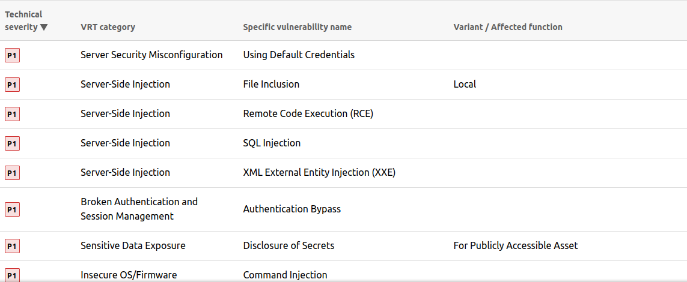
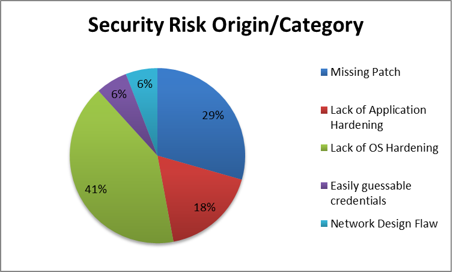

Do These Steps in You Report and Get Paid Faster
Hello to all , this article is for every beginner and intermediate in web application pentesting or bug bounty hunting,
so the goal of this article is to mention the step or the process that a lot of people forget when they talking about methodology which is the reporting

For Bug Bounty hunters, to make a valuable submission that gets paid faster should consists of some qualities:
1) Proof Of Concept :
make it as easy as possible , visualize it by uploading video , screenshots to make it clear ..
2) Impact :
talk about the effect of the flaw , how this may affect the program's business , and their web application , what can be done with this bug ..
3) Choose the right VRT :
Choose the right category , if there is no specified category for your finding , choose the nearest one .. take a look for a list here from bugcrowd click here

4) Spellcheck :
use a free online writing assistant that correct spelling , grammar , and others .. to make it looks more professional . We recommend https://www.online-spellcheck.com/ to use
h4>5) Template generator :
If you are lazy to make a report from zero , you can use a tool that generates a template for you .. We recommend you to use : https://github.com/fransr/template-generator
1) The reporting phase start after signing the Rules Of Engagement :
after sign ROE , don't wait to finish the whole test , note everything as a draft , take screenshots , so you don't confuse at the end of the process , so the process will be something like TEST => WRITE DOWN INFORMATION YOU GOT => REPORT => REPEAT .
2) Use Mind Mapping tools :
use mind-mapping tools to organize IPs , [Sub]domains , ports , hidden directories , Interesting areas , etc...
3) Remember that you are targeting 3 people in the report :
the Managers and CEOs , the developers , and the IT guys ..
A) The managers focus on money and time .
B) The IT section focuses more in technical depth , like what kind of vulnerability and what is the most areas damaged ..
C) The developers focuses on the most technical thing , like proof of concept , what exploit you use , source code , tips and solutions , etc..
4) Use Graphs and Charts for information you provide :
https://www.canva.com/graphs/ provide a great functionality that allows you to make your charts and graphs and edit it easily , also it's free
